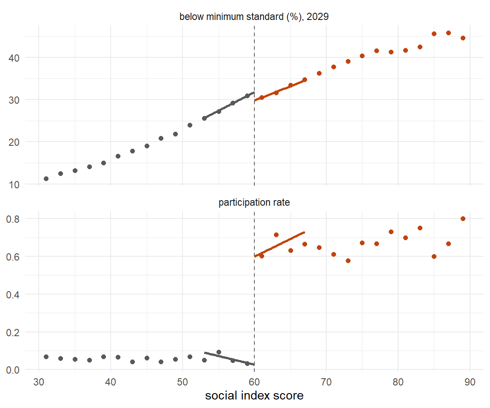
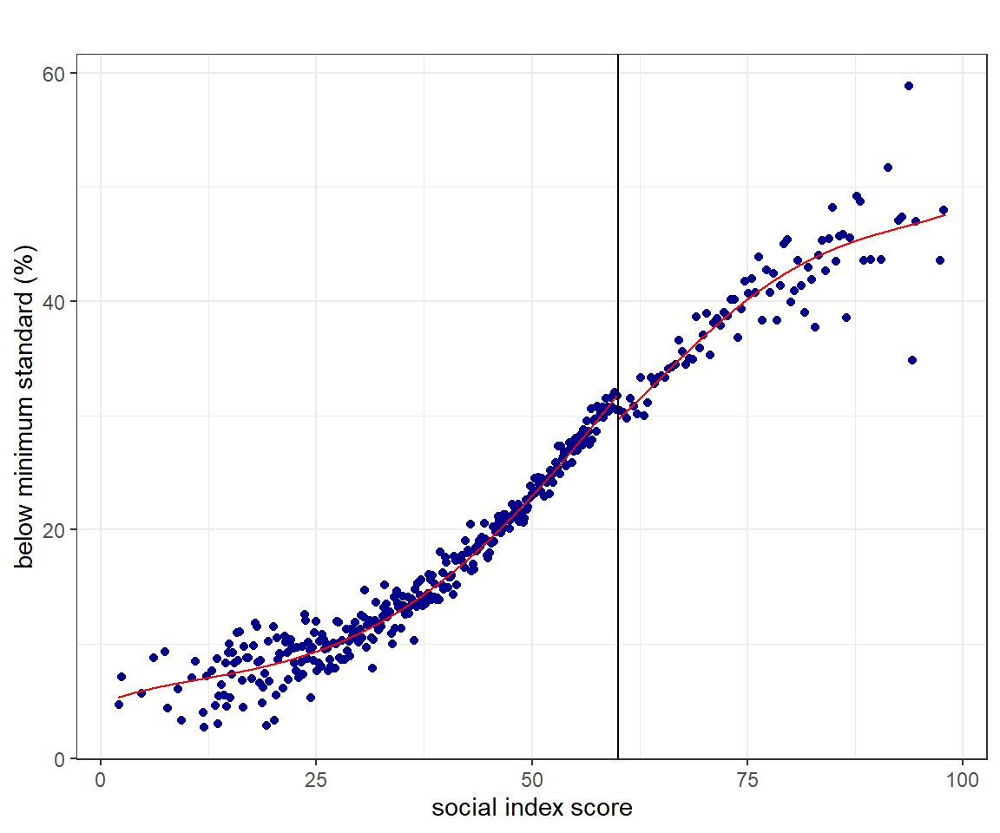
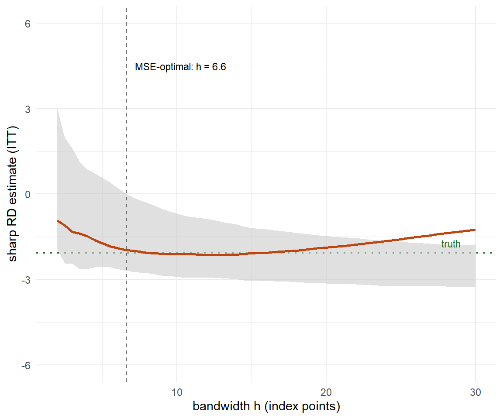
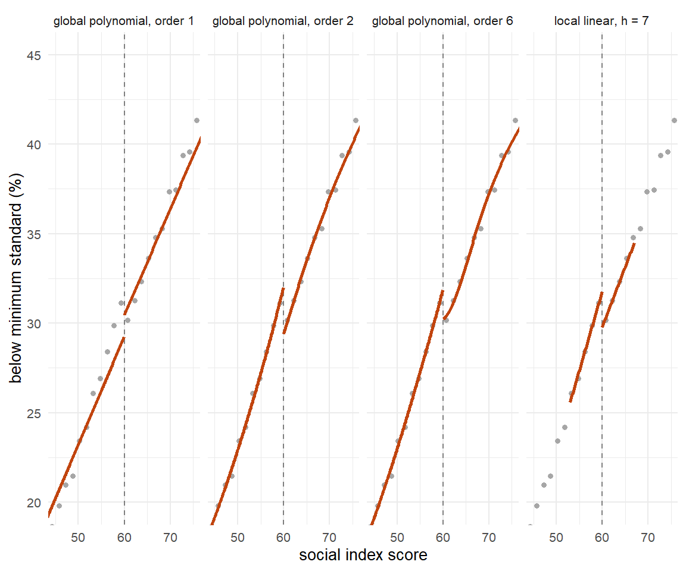
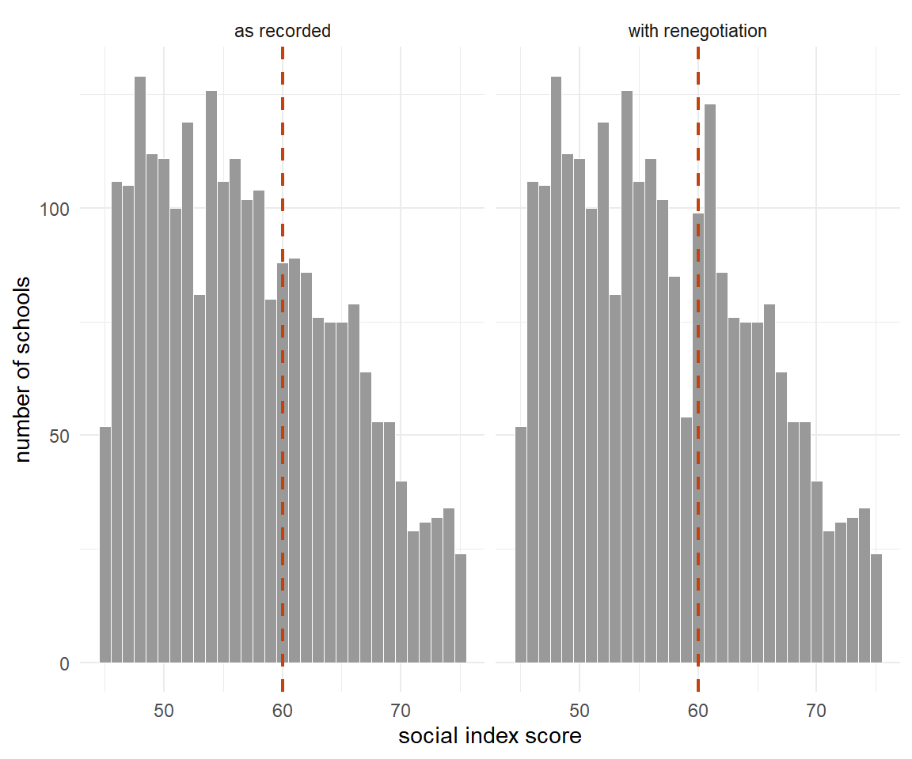
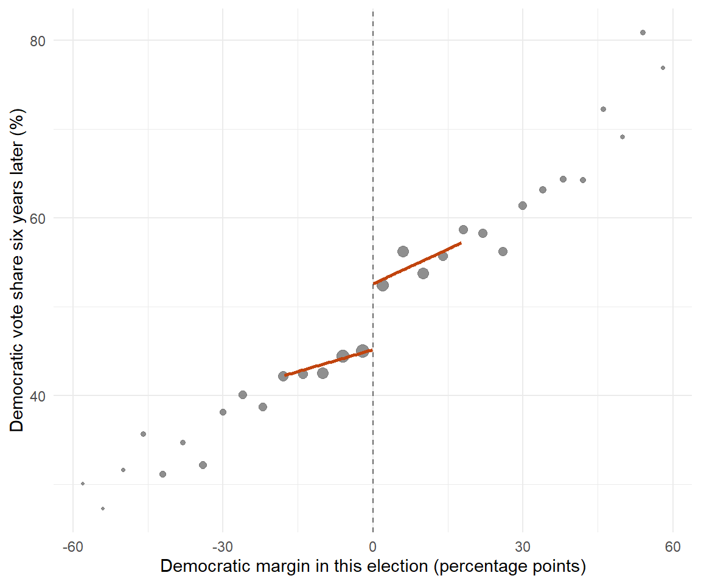

9.4 Discontinuities
Regression discontinuity designs
9.4.1 A Line Drawn Through a List of Schools
In the spring of 2024 the school ministry of North Rhine-Westphalia sorted every one of its schools by a single number. The number is the Schulsozialindex, first built at the Ruhr-Universität Bochum in 2020 and revised in 2023, and it is a factor score over four administrative indicators: the share of under-eighteens in the school's catchment area living in households on basic income support, the share of pupils whose family language is not German, the share who moved to Germany themselves, and the share with a diagnosed need for support in learning, language or emotional and social development. The ministry is explicit that the last of these is not counted on its own — schools carrying both a high poverty rate and a high share of such pupils are weighted more heavily, which is an interaction in everything but name. The score is then pressed into nine steps. Since the 2023 revision, step 9 holds the most disadvantaged five per cent of schools and steps 1 to 8 split the remaining ninety-five at equal intervals.236
Then the ministry drew a line. Primary schools in steps 6 to 9 and secondary schools in steps 7 to 9 were invited to join the Startchancen programme — twenty billion euros over ten years, which the federal ministry calls the largest and longest-running education programme in the history of the Federal Republic. Schools below the line were not invited. North Rhine-Westphalia took its schools in two tranches: 400 started in the 2024/25 school year and 523 followed in 2025/26, 923 in all.
Consider two primary schools in the same city. One has an index score that puts it barely inside step 6. The other is a fraction of a point below and lands in step 5. Everything we can measure about them is nearly identical: the same kind of neighbourhood, the same share of families on benefits, the same staffroom problems. One gets a decade of money, staff and support. The other gets a letter saying it was not selected.
In 2030 somebody will have to say whether the money worked. Section 9.3 showed one way to answer that: compare the change over time in funded schools with the change over time in unfunded ones, and defend the parallel-trends assumption. This section shows the other way, and it is a way that needs no assumption about trends at all. It needs only the two schools above — and the observation that whatever separates them, it cannot be much.
When a programme is handed out by a rule, and the rule has a threshold, the threshold itself is the experiment. The people on either side of it are as good as randomised, and the rule tells you so.
9.4.2 What Thistlethwaite and Campbell Were Trying to Fix
The method was invented in 1958 and published in 1960, by Donald L. Thistlethwaite and Donald T. Campbell, in the Journal of Educational Psychology. The title tells you what problem they had in mind: Regression-Discontinuity Analysis: An Alternative to the Ex Post Facto Experiment.
The ex post facto experiment was the dominant design in mid-century American sociology, associated above all with F. Stuart Chapin's Experimental Designs in Sociological Research (1947) and Ernest Greenwood's Experimental Sociology (1945). The recipe: wait until a programme has run, then find, for every person who received it, a person who did not but who looks the same on a list of measured background variables, and compare the pairs. You will recognise it. It is matching, done before anyone had worked out what matching can and cannot promise — the subject of Section 9.2. Campbell's objection was not that matching is useless. It was that matching on a handful of fallible measurements buys the appearance of comparability without the substance, and that regression to the mean will then manufacture an effect out of nothing.
Thistlethwaite and Campbell had in front of them a setting where the selection rule was not a mystery to be reconstructed but a published number. The National Merit Scholarship programme gave two grades of public recognition to American high-school students on the strength of a qualifying test: a Certificate of Merit to those above a state-specific cut-off, a Letter of Commendation to those below it. The two groups were treated differently by their schools, their teachers and their own self-image — and the only thing that separated a student at the bottom of the certificate group from one at the top of the commendation group was a point or two on a test.
So they plotted the outcomes against the test score and looked for a step in the line at the cut-off. That is the whole idea. There is no matching, no covariate list, no assumption that treated and untreated units are alike overall. There is only the claim that a curve which is smooth everywhere else has no business jumping at exactly the point where the rule changes.
Campbell went on to make this the centrepiece of a much larger argument. In the chapter he wrote with Julian Stanley for the Handbook of Research on Teaching (1963), later reprinted as Experimental and Quasi-Experimental Designs for Research, the method appears as Design 16. In Reforms as Experiments (American Psychologist, 1969) it becomes a proposal for how governments should work: administer scarce benefits by an explicit rule, record the rule, and the evaluation writes itself.
If there is no significant difference for these at the decision-point intercept, then the tie-breaking experiment should show no difference. In cases where the tie breakers would show an effect, there should be an abrupt discontinuity in the regression line.
--- Campbell (1969, p. 420)
Definition
A regression discontinuity design exploits a treatment whose assignment — or whose eligibility — is a known function of an observed, continuous variable — the running variable or score — crossing a fixed cut-off. The causal quantity of interest is the vertical gap between the two regression functions at the cut-off:
\[\tau = \lim_{x \downarrow c} E[y \mid x] - \lim_{x \uparrow c} E[y \mid x]\]
Everything in the design turns on that limit being taken from data near \(c\), and on there being no reason other than the treatment for the two limits to differ.
9.4.3 Waiting for Life to Arrive
And then, for thirty-five years, almost nothing happened.
Thomas Cook told this story in a paper whose title is a nod to Beckett: Waiting for Life to Arrive: A history of the regression-discontinuity design in Psychology, Statistics and Economics (Journal of Econometrics, 2008). Cook counts the citations and finds an invention that nobody used.
Part of the reason is that the inventor talked it down. Campbell and Stanley described the design as "very limited in its range of applications", and Cook notes drily that this is "not a ringing endorsement, particularly when coming from the method's own developer". Statisticians found the problem uninteresting for a different reason: once you know the assignment rule completely, where is the difficulty? And economists, Cook writes, had the design "off the radarscope" by 1980, "not to re-emerge for another 15 years or so".
The most interesting part of Cook's history is that the design kept being invented from scratch, in fields that did not read each other. Psychology got it in 1960. Economics got it in 1972, from Arthur Goldberger. Statistics got it again in 1977, from Donald Rubin. And public health rediscovered it in 1996 under the name risk-based allocation. Goldberger, the economist, did not cite Campbell and did not think he was writing about regression discontinuity at all. Goldberger was asking a different question: what happens to a treatment-effect estimate when people are selected on a measured pre-test rather than on their true, unmeasured ability? His answer was that selection on the observed score produces no bias — the distinction that we now call selection on observables versus selection on unobservables. Regression discontinuity is the limiting case of his argument.
Goldberger also computed the price. For a cut-off at the midpoint of a normally distributed score, he found the design roughly 2.75 times less efficient than an experiment with the same number of units.237 Keep that number. It is the single most useful fact about regression discontinuity in practice, and it explains most of the disappointments.
Two and three-quarter times less efficient means you need nearly three times the sample to reach the same precision. A threshold study with 500 units on each side — a thousand in all — has roughly the power of a randomised trial with 360 units in total. Regression discontinuity is not a cheap experiment; it is an expensive one that somebody else already paid for.
Economics came back to the design in the late 1990s, and it came back fast: Wilbert van der Klaauw on financial aid offers (circulated from the mid-1990s, published in 2002), Joshua Angrist and Victor Lavy on Israeli class sizes, Sandra Black on school-attendance boundaries. The theoretical account arrived in 2001, when Jinyong Hahn, Petra Todd and van der Klaauw published nine pages in Econometrica that set out what the design actually assumes. Their three results organise everything that follows in this section: identification rests on continuity, not on unconfoundedness; the estimand is a local effect at the cut-off and nowhere else; and when the rule is obeyed only partly, the estimator is a ratio — an instrumental-variables estimator in disguise.
The prize that was not for this design
The 2021 Nobel Memorial Prize went to David Card, Joshua Angrist and Guido Imbens, and it is often reported as a prize for regression discontinuity. It was not. The citations read "for his empirical contributions to labour economics" and "for their methodological contributions to the analysis of causal relationships", and the words regression discontinuity do not appear in the press release at all.
They do appear twice in the committee's Scientific Background, and both times the credit goes elsewhere. Once to name Donald Campbell as the man who "developed one of the main empirical methods --- the regression discontinuity (RD) design" for natural experiments. And once to note that the framework Angrist and Imbens built was later used to work out "the conditions under which a causal effect can be identified when using other methods for causal inference, including the regression discontinuity design (Hahn, Todd, and van der Klaauw, 2001)".
That second sentence is the real connection, and it is worth more than the misattribution. The language in which Hahn, Todd and van der Klaauw stated what a fuzzy discontinuity identifies --- compliers, monotonicity, a local average treatment effect --- is exactly the language Angrist and Imbens had invented for instrumental variables a decade earlier. A prize for a vocabulary is still a prize for the sentences you can write in it.
9.4.4 A Catalogue of Thresholds
Before the machinery, the payoff. The following studies all answer a question that had resisted every other design, and they do it because somebody once wrote a rule with a number in it.
Look at what these have in common. Not one of them is a variable a researcher chose. A county poverty rate taken from the 1960 census and used once, in 1965; a birthday; a gram on a hospital scale; a rabbinical ruling from the twelfth century about how many children one teacher may instruct. The design does not find natural experiments; it finds bureaucracies, and bureaucracies leave thresholds behind them the way glaciers leave moraines.
Two of the entries deserve a second look because of what the naive comparison says. Sicker newborns get more intensive care, so the raw association between treatment intensity and infant mortality is positive: more care, more death. And in Israel, small classes are concentrated in schools that need them, so the raw association between class size and achievement is also positive: bigger classes, better results. In both cases the threshold reverses the sign.
Your Turn
The table above is sortable, and reading a table is a skill. Click the Year heading to reorder it.
The oldest study in the catalogue was published in .
Now sort by Field. Four of the nine come from public health or health economics. Of those four, how many use a date — an age or a birthday — as the running variable?
Type birthday into the search box at the top. Two studies come back. In one of
them, crossing the threshold makes people worse off.
And one question the table can answer only if you read the third column properly. Eight of these nine cut-offs were written down by an administrator. Which one was not?
Reading
The two Cambridge Elements volumes by Matias Cattaneo, Nicolás Idrobo and Rocío Titiunik — A Practical Introduction to Regression Discontinuity Designs: Foundations (2020) and Extensions (2024) — are the current standard, they are written around R and Stata code, and the working-paper versions are free on arXiv. For the older canon, Imbens and Lemieux (2008) and Lee and Lemieux (2010) are still the papers everyone cites. Cattaneo and Titiunik (2022) in the Annual Review of Economics is the best short overview.
9.4.5 Sharp and Fuzzy
The design comes in two versions, and the difference is whether the rule is obeyed.
Definition
In a sharp design, treatment is a deterministic step function of the score: everyone above the cut-off is treated, everyone below is not.
\[d_i = \mathbb{1}\{x_i \geq c\}\]
In a fuzzy design, crossing the cut-off changes the probability of treatment but does not settle it:
\[\lim_{x \downarrow c} P(d = 1 \mid x) \neq \lim_{x \uparrow c} P(d = 1 \mid x)\]
The sharp estimand is the jump in the outcome. The fuzzy estimand is the ratio of the jump in the outcome to the jump in the treatment probability:
\[\tau_{\text{fuzzy}} = \frac{\lim_{x \downarrow c} E[y \mid x] - \lim_{x \uparrow c} E[y \mid x]}{\lim_{x \downarrow c} E[d \mid x] - \lim_{x \uparrow c} E[d \mid x]}\]
The Startchancen case is fuzzy, and for a mundane reason. In North Rhine-Westphalia the index governed who was eligible; it did not settle who ended up in. The ministry reports both a pre-selection step by the school inspectorate within the eligible steps, and that "the decision to take part lay with the schools themselves, in consultation with their local authority". So the score determines eligibility sharply, and eligibility determines participation only partly.238
That is exactly the structure of an instrumental variable, and the fuzzy estimator is a Wald ratio. If this feels familiar, it should: it is the same algebra as Section 9.5, applied inside a narrow window around a number. The assumptions travel too. There must be no defiers — no school that would have joined had it not been invited and refused once it was — and under that monotonicity condition the ratio identifies the average effect for compliers at the cut-off: schools that took part because they were invited, and that sit right on the line. Continuity identifies the sharp estimand; continuity plus monotonicity identifies the fuzzy one.
Not "the effect of the programme". Not even "the effect of the programme at the cut-off". The effect for the schools that respond to the invitation, at the cut-off. We will measure the distance between those three quantities later in this section, once we have a world where all three are known.
Your Turn
In North Rhine-Westphalia the index decided who was eligible; each school then decided for itself whether to join.
The design is therefore .
Had every invited school joined, and no uninvited school found a way in, the design would have been .
A school that would have joined had it not been invited, and refused once it was, is called a .
True or false: monotonicity can be checked by comparing take-up just above and just below the cut-off.
Take-up above and below tells you the size of the jump — the first stage. Monotonicity is about individual schools moving in the same direction, and a school's behaviour under the arm it did not get is never observed. Every jump in take-up is consistent with some compliers and some defiers cancelling out.
9.4.6 The Identifying Assumption
Section 9.1 decomposed every naive comparison into a treatment effect plus a selection bias term, and every design in this chapter is an argument for why the second term vanishes. Matching argues that it vanishes once you condition on enough covariates. Difference-in-differences argues that it is constant over time and cancels. Regression discontinuity argues something narrower and, on the face of it, much weaker.
Definition
Continuity. The conditional expectations of both potential outcomes are continuous in the running variable at the cut-off:
\[E[y_i(0) \mid x_i = x] \quad \text{and} \quad E[y_i(1) \mid x_i = x] \quad \text{are continuous at } x = c\]
Under continuity, the sharp design identifies
\[\tau_{\text{SRD}} = E[y_i(1) - y_i(0) \mid x_i = c]\]
the average treatment effect for units exactly at the cut-off (Hahn, Todd and van der Klaauw, 2001).
Read the assumption carefully, because two things about it are unusual.
First, it says nothing about units away from the cut-off, and it therefore permits arbitrarily severe confounding everywhere else. Schools with a high social index really are different from schools with a low one, in every way you can imagine and several you cannot. Continuity does not deny that. It only says that the difference does not arrive all at once, at 60.
Second — and this is what makes the design worth having — continuity is a statement about a limit, and limits are things the data can speak to. You cannot test whether treated and untreated units are comparable after conditioning on covariates; that is the whole trouble with matching. But you can look at whether things which should be smooth actually are: the density of the score, the pre-programme outcomes, covariates that no programme could have touched. None of those checks proves continuity. Together they make a case that a reader can inspect, which is more than most designs offer.
Your Turn
Continuity is a statement about two conditional expectations at one point. Three of the four situations below leave it intact. Which one breaks it?
And the sentence that separates this design from Section 9.2. Continuity permits arbitrarily severe confounding .
9.4.7 A Programme We Can Check
The Startchancen evaluation reports for the first time at the end of 2026 or the beginning of 2027 and concludes in 2030, so nobody yet knows what the answer is. We will therefore build a world in which we do.
As in Sections 9.2.2, 9.3.3 and 9.5.6, the way to find out what an estimator does is to build a world in which the answer is already written down. The simulation below has 4,200 schools in one federal state. Each has a social index score between 2 and 98, known to the ministry. Schools at 60 or above are invited. Invited schools join with a probability that depends on something we will never observe — call it the leadership's capacity to take on a ten-year project — and a handful of schools below the line join through a hardship route — about one school in twenty below the line. The outcome is the share of Year-4 pupils below the minimum standard in mathematics, measured in 2029. Nationally that share was about 22 per cent in the 2021 IQB survey; in the schools this programme addresses it runs far higher.
The effect of participation is negative — fewer children below the standard — and it is deliberately heterogeneous: larger for schools further above the threshold, and larger for schools with more capacity. That last choice is what will separate the three estimands we warned about.
simulate_startchancen <- function(n = 4200, seed = 4, world = "clean",
strength = 2.5) {
set.seed(seed)
# The published social index: 0-100, higher means more disadvantage.
index <- pmin(pmax(rnorm(n, mean = 50, sd = 15), 2), 98)
# Unobserved: how much room to manoeuvre the school leadership has.
capacity <- rnorm(n)
# A world in which schools just below the line get themselves moved above it.
if (world == "manipulated") {
pushed <- (index >= 58 & index < 60) & (capacity > 0.5)
index[pushed] <- 60 + runif(sum(pushed), 0, 1)
}
invited <- as.integer(index >= 60)
# Take-up. One latent draw, two thresholds: nobody is a defier.
u <- runif(n)
participates <- as.integer(ifelse(invited == 1,
u < plogis( 0.7 + 0.9 * capacity),
u < plogis(-3.2 + 0.9 * capacity)))
# Share of Year-4 pupils below the minimum standard, as a percentage.
mean_curve <- function(x) 5 + 50 * plogis((x - 58) / 14)
y0 <- mean_curve(index) - strength * capacity + rnorm(n, 0, 1.5)
tau <- -3.2 - 0.11 * (index - 60) - 1.3 * capacity
tibble(
school = seq_len(n),
index = index,
step = as.integer(as.character(cut(index,
breaks = c(-Inf, 20, 30, 40, 50, 60, 70, 80, 90, Inf),
labels = 1:9, right = FALSE))),
invited = invited,
participates = participates,
benefits = 4 + 0.55 * index + rnorm(n, 0, 6),
pre_score = mean_curve(index) - 1.0 - 0.8 * strength * capacity + rnorm(n, 0, 1.5),
capacity = capacity,
tau = tau,
below_standard = y0 + participates * tau
)
}
sc <- simulate_startchancen()Three quantities are true in this world at once, and they are not the same number.
set.seed(99)
cap_draw <- rnorm(8e6)
complier_weight <- plogis(0.7 + 0.9 * cap_draw) - plogis(-3.2 + 0.9 * cap_draw) # complier weight
truth <- tibble(
Quantity = c("effect at the cut-off, all schools",
"effect at the cut-off, compliers only",
"intention to treat at the cut-off",
"effect on all participating schools",
"effect on every school in the state"),
Value = c(-3.2,
-3.2 - 1.3 * sum(cap_draw * complier_weight) / sum(complier_weight),
mean(complier_weight) * (-3.2 - 1.3 * sum(cap_draw * complier_weight) / sum(complier_weight)),
mean(sc$tau[sc$participates == 1]),
mean(sc$tau)))
knitr::kable(truth, digits = 3,
caption = "Five true answers to five different questions, in percentage points of pupils below the minimum standard. Note that the second and the fourth differ by more than half a point, and the fifth is only three fifths of the second.")| Quantity | Value |
|---|---|
| effect at the cut-off, all schools | -3.200 |
| effect at the cut-off, compliers only | -3.493 |
| intention to treat at the cut-off | -2.064 |
| effect on all participating schools | -4.080 |
| effect on every school in the state | -2.070 |
Your Turn
Five numbers, one programme, and only one of them is what a discontinuity design estimates.
Which?
The effect on every school in the state is much the smallest of the five, in absolute value. In this world, why?
A minister reads the estimate as "what we would get by doubling the programme". That reading is wrong by roughly what factor? Divide the fifth quantity by the second:
bin_means <- function(d, yvar, width = 2, lo = 30, hi = 90) {
d %>%
filter(index >= lo, index <= hi) %>%
mutate(centre = floor((index - 60) / width) * width + width / 2 + 60) %>%
group_by(centre) %>%
summarise(y = mean(.data[[yvar]]), .groups = "drop") %>%
mutate(side = ifelse(centre < 60, "below", "above"))
}
local_fit <- function(d, yvar, h = 7) {
b <- d %>%
filter(abs(index - 60) <= h) %>%
mutate(z = index - 60, g = 1 - abs(z) / h, above = as.integer(index >= 60))
m <- lm(reformulate("z * above", yvar), data = b, weights = b$g)
tibble(z = c(seq(-h, 0, length.out = 50), seq(0, h, length.out = 50)),
above = rep(0:1, each = 50)) %>%
mutate(fit = predict(m, newdata = .),
index = z + 60,
side = ifelse(above == 1, "above", "below"))
}
colours <- c(below = "grey35", above = "#C1440E")
points <- bind_rows(
bin_means(sc, "below_standard") %>% mutate(panel = "below minimum standard (%), 2029"),
bin_means(sc, "participates") %>% mutate(panel = "participation rate"))
lines <- bind_rows(
local_fit(sc, "below_standard") %>% mutate(panel = "below minimum standard (%), 2029"),
local_fit(sc, "participates") %>% mutate(panel = "participation rate"))
ggplot(points, aes(centre, y)) +
geom_vline(xintercept = 60, linetype = "dashed", colour = "grey40") +
geom_point(aes(colour = side), size = 1.6) +
geom_line(data = lines, aes(index, fit, colour = side), linewidth = 0.9) +
scale_colour_manual(values = colours, guide = "none") +
facet_wrap(~panel, ncol = 1, scales = "free_y") +
labs(x = "social index score", y = NULL) +
theme_minimal(base_size = 11)
Figure 9.8: Binned means of the outcome and of the participation rate against the social index, with local linear fits on each side. The upper panel drops by about two points at the threshold; the lower panel shows why the design is fuzzy — participation jumps from near zero to about 0.6, not to one.
9.4.8 What the Naive Comparison Says
Start with the answer a competent analyst would produce if the threshold had never occurred to anyone.
sc %>%
group_by(participates) %>%
summarise(n = n(),
`below standard` = mean(below_standard),
`social index` = mean(index), .groups = "drop") %>%
knitr::kable(digits = 2,
caption = "Participating and non-participating schools, compared directly. The programme schools look about eight points worse.")| participates | n | below standard | social index |
|---|---|---|---|
| 0 | 3335 | 21.90 | 46.48 |
| 1 | 865 | 29.82 | 63.74 |
models <- list(
"raw" = lm(below_standard ~ participates, data = sc),
"+ index" = lm(below_standard ~ participates + index, data = sc),
"+ index, covariates" = lm(below_standard ~ participates + index + benefits + pre_score, data = sc))
purrr::imap_dfr(models, ~tibble(
Model = .y,
Estimate = coef(.x)["participates"],
SE = summary(.x)$coefficients["participates", 2],
`CI low` = confint(.x)["participates", 1],
`CI high` = confint(.x)["participates", 2])) %>%
knitr::kable(digits = 3,
caption = "Three regressions, three stories. The raw comparison has the wrong sign; adding the index flips it; adding covariates shrinks the standard error to a tenth of a point.")| Model | Estimate | SE | CI low | CI high |
|---|---|---|---|---|
| raw | 7.922 | 0.359 | 7.218 | 8.626 |
| + index | -3.711 | 0.154 | -4.013 | -3.409 |
| + index, covariates | -3.922 | 0.099 | -4.116 | -3.728 |
The raw comparison says the programme made things markedly worse. Nobody would publish that, so the analyst controls for the index, and the sign flips to about \(-3.7\). Add the covariates and the estimate is \(-3.9\) with a standard error of one tenth of a percentage point. The true effect for compliers at the cut-off is \(-3.49\). So the controlled regression is nearly right — and that is the most dangerous outcome of all, because there is no way to know it from the output.
Here is the demonstration. Everything in the world stays fixed except how much the unobserved leadership capacity matters for the outcome. That parameter changes no treatment effect at all: the effect for compliers at the cut-off is \(-3.49\) in every row below. It changes only how much of the difference between participants and non-participants is confounding.
drift <- purrr::map_dfr(c(0, 1, 2.5, 5), function(st) {
v <- vapply(1:100, function(i) {
d <- simulate_startchancen(seed = 2000 + i, strength = st)
c(coef(lm(below_standard ~ participates + index + benefits + pre_score, data = d))["participates"],
rdrobust(d$below_standard, d$index, c = 60, fuzzy = d$participates)$coef[1, 1])
}, numeric(2))
tibble(`unobserved factor` = st,
OLS = mean(v[1, ]), `OLS sd` = sd(v[1, ]),
RD = mean(v[2, ]), `RD sd` = sd(v[2, ]))
})
knitr::kable(drift, digits = 3,
caption = "One hundred simulated studies for each row. The regression estimate walks from -3.08 to -4.31 as the unobserved factor grows; the discontinuity estimate stays put and only loses precision. The truth is -3.49 in every row.")| unobserved factor | OLS | OLS sd | RD | RD sd |
|---|---|---|---|---|
| 0.0 | -3.075 | 0.111 | -3.341 | 0.352 |
| 1.0 | -3.548 | 0.119 | -3.317 | 0.444 |
| 2.5 | -4.065 | 0.126 | -3.258 | 0.655 |
| 5.0 | -4.311 | 0.131 | -3.167 | 1.082 |
Even in the first row, where capacity does not touch the outcome at all, the regression sits at \(-3.08\) rather than \(-3.49\). That last gap is not confounding: with heterogeneous effects, a regression on everybody is aiming at a different average than the compliers at the threshold. It never was going to land on \(-3.49\).
The controlled regression is not wrong by a lot. It is wrong by an amount that depends on something you cannot see, and its standard error does not know that. The discontinuity estimate is noisier and honest about it: it drifts by a sixth of a point across the four rows and carries a small smoothing bias of its own, but nothing like the regression's march.
Your Turn
The covariate-adjusted regression gave \(-3.9\) with a standard error of one tenth of a point. The truth for compliers at the cut-off is \(-3.49\).
So the regression is wrong by about points, which is about standard errors.
Across the four rows of the table, the regression walked from \(-3.08\) to \(-4.31\). What was changed between the rows?
True or false: a reader who saw only the third row of that table could have told from the output that the estimate was too large.
9.4.9 The Jump, by Hand
Before reaching for a package, do it with lm(). Three decisions have to be
made, and the code makes all three visible.
How wide a window? Take schools within seven index points of the threshold. What shape inside it? A straight line on each side. Which observations count most? Those closest to the cut-off, through a triangular weight that falls linearly to zero at the edge of the window.
h <- 7
window <- sc %>%
filter(abs(index - 60) <= h) %>%
mutate(z = index - 60, weight = 1 - abs(z) / h)
nrow(window)
#> [1] 1270
# The wrong way first: just compare the two group means inside the window.
mean(window$below_standard[window$invited == 1]) -
mean(window$below_standard[window$invited == 0])
#> [1] 3.549679
# The right way: let each side have its own intercept and its own slope.
local_linear <- lm(below_standard ~ z * invited, data = window, weights = weight)
summary(local_linear)$coefficients
#> Estimate Std. Error t value Pr(>|t|)
#> (Intercept) 31.7766097 0.25487281 124.676344 0.000000000000000000000000000000
#> z 0.8838592 0.08530413 10.361271 0.000000000000000000000003341905
#> invited -1.9918332 0.37406577 -5.324821 0.000000119460378352071422045598
#> z:invited -0.2127814 0.13009732 -1.635555 0.102181253336013605492738065550The difference of means inside the window is \(+3.55\): still the wrong sign, even
after throwing away seven of every ten schools. The window is narrow, but the
outcome climbs steeply across it, and the invited schools sit systematically on
the upper half. The invited coefficient — the vertical gap between two
fitted lines evaluated at \(z = 0\) — is \(-1.99\).
That coefficient estimates the intention-to-treat effect: the consequence of being invited, not of taking part. It is a sharp regression discontinuity on eligibility, and it is the numerator of everything that follows.
Why a straight line rather than a curve? Because at a cut-off you are always extrapolating to a boundary, and boundary estimates from a local constant fit carry a bias of order \(h\), while a local linear fit reduces it to order \(h^2\). Fitting the mean of a window is the one thing you should never do — as the \(+3.55\) above demonstrates.
Your Turn
Inside a window seven index points wide the difference of group means was \(+3.55\); the local linear estimate on the same schools was \(-1.99\).
The two disagree by more than five points on identical data. Why?
True or false: shrinking the window far enough would eventually bring the difference of means into agreement with the local linear estimate.
Fill in the two orders of bias. A local constant fit at a boundary carries a bias of order ; a local linear fit reduces it to order .
9.4.10 The Picture Is a Choice Too
Before the estimate, a word about the figure, because in practice the figure is what readers judge. Every binned scatter plot in this section was built by hand, and the bin width was a number we made up: two index points above, one and a half in the polynomial comparison. Widen the bins and any jump looks smoother; narrow them and noise starts to look like structure. That is exactly the kind of invisible researcher choice the rest of this section is about.
There is a selector for it. Calonico, Cattaneo and Titiunik (2015) worked out
how many bins to use — either to mimic the underlying variability of the data or
to give an integrated-mean-squared-error-optimal picture — and rdplot()
implements it.
rdplot(y = sc$below_standard, x = sc$index, c = 60,
x.label = "social index score",
y.label = "below minimum standard (%)",
title = "")
Figure 9.9: The same discontinuity, binned by rdplot's own selector rather than by hand. The number of bins on each side is chosen to trace the variability of the data instead of being picked by the analyst; the smooth line through them is a global fourth-order polynomial, drawn for the eye.
One warning about that picture, which we will earn in Section
9.4.13: the smooth curve rdplot() draws
through the bins is a global fourth-order polynomial. It is there to show the
shape of the data, not to produce the estimate, and the jump you think you see
in it is not the number anyone should report.
9.4.11 Doing It Properly: rdrobust
Every choice we made by hand has a literature behind it. rdrobust, from
Sebastián Calonico, Matias Cattaneo, Max Farrell and Rocío Titiunik, makes those
choices for you and reports what it chose.
itt <- rdrobust(y = sc$below_standard, x = sc$index, c = 60)
summary(itt, all = TRUE)
#> Call: rdrobust
#>
#> Sharp RD estimates using local polynomial regression.
#>
#> Number of Obs. 4200
#> BW type mserd
#> Kernel Triangular
#> VCE method NN
#>
#> Left Right
#> Number of Obs. 3142 1058
#> Eff. Number of Obs. 687 530
#> Order est. (p) 1 1
#> Order bias (q) 2 2
#> BW est. (h) 6.601 6.601
#> BW bias (b) 11.040 11.040
#> rho (h/b) 0.598 0.598
#> Unique Obs. 3141 1057
#>
#> =======================================================================================
#> Method Coef. Std. Err. z P>|z| [ 95% C.I. ]
#> =======================================================================================
#> Conventional -1.962 0.472 -4.158 0.000 [-2.887 , -1.037]
#> Bias-Corrected -1.866 0.472 -3.953 0.000 [-2.791 , -0.941]
#> Robust -1.866 0.558 -3.341 0.001 [-2.960 , -0.771]
#> =======================================================================================Three lines of output deserve attention.
The bandwidth, h, was chosen to minimise mean squared error, following
Imbens and Kalyanaraman (2012) as refined by Calonico, Cattaneo and Titiunik
(2014). It came out at 6.6 index points, which leaves 687 schools below the line
and 530 above.
The three estimates, printed because we asked for all = TRUE; the default
output shows only the last of them. Conventional is the local linear fit — the
same estimator we computed by hand, at the bandwidth the package chose. Bias-Corrected subtracts an estimate of the
smoothing bias, using a second, wider bandwidth b and a quadratic fit.
Robust reports the bias-corrected point estimate with a standard error that
accounts for the fact that the bias correction was itself estimated. This last
point is the contribution of Calonico, Cattaneo and Titiunik (2014), and it is
why the robust interval is wider than the conventional one rather than narrower.
The robust confidence interval is centred on the bias-corrected estimate, not on
the conventional one. In awkward samples it can therefore fail to contain the
conventional point estimate. That is not a bug; it means the two are answering
slightly different questions. Report the conventional estimate with the robust
interval, and say that you are doing so. That is the convention the rdrobust
output itself invites: the point estimate stays on the MSE-optimal bandwidth,
and the interval carries the bias correction.
9.4.12 How Wide Should the Window Be?
The bandwidth is the one choice in a regression discontinuity that a sceptical reader will always attack, and rightly: it trades bias against variance, and the optimum depends on curvature you cannot see.
bw_grid <- purrr::map_dfr(seq(2, 30, by = 0.5), function(b) {
f <- rdrobust(sc$below_standard, sc$index, c = 60, h = b)
tibble(h = b, est = f$coef[1, 1], lo = f$ci[3, 1], hi = f$ci[3, 2])
})
h_opt <- rdrobust(sc$below_standard, sc$index, c = 60)$bws[1, 1]
ggplot(bw_grid, aes(h, est)) +
geom_hline(yintercept = -2.064, linetype = "dotted",
colour = "#1B7837", linewidth = 0.8) +
geom_ribbon(aes(ymin = lo, ymax = hi), fill = "grey80", alpha = 0.6) +
geom_line(colour = "#C1440E", linewidth = 0.9) +
geom_vline(xintercept = h_opt, linetype = "dashed", colour = "grey30") +
annotate("text", x = h_opt + 0.6, y = 4.5, hjust = 0, size = 3,
label = paste0("MSE-optimal: h = ", round(h_opt, 1))) +
annotate("text", x = 29, y = -2.064, vjust = -0.7, hjust = 1, size = 3,
colour = "#1B7837", label = "truth") +
coord_cartesian(ylim = c(-6, 6)) +
labs(x = "bandwidth h (index points)", y = "sharp RD estimate (ITT)") +
theme_minimal(base_size = 11)
Figure 9.10: The intention-to-treat estimate and its robust interval as a function of the bandwidth. The estimate is flat between about six and twenty index points; below six the interval explodes, above twenty it drifts back towards zero as the window swallows schools that resemble nothing near the threshold.
rdrobust offers several selectors, and they do not agree.
purrr::map_dfr(c("mserd", "msetwo", "cerrd"), function(b) {
rr <- rdrobust(sc$below_standard, sc$index, c = 60, bwselect = b)
tibble(selector = b, `h left` = rr$bws[1, 1], `h right` = rr$bws[1, 2],
estimate = rr$coef[1, 1])
}) %>%
knitr::kable(digits = 3,
caption = "Three bandwidth selectors on the same data. `mserd` uses one bandwidth for both sides, `msetwo` allows them to differ, `cerrd` optimises coverage error rather than mean squared error and is therefore deliberately narrower.")| selector | h left | h right | estimate |
|---|---|---|---|
| mserd | 6.601 | 6.601 | -1.962 |
| msetwo | 9.890 | 6.267 | -1.968 |
| cerrd | 4.350 | 4.350 | -1.576 |
The honest way to present this is not to pick one. It is to show the picture above, state which selector produced the headline number, and let the reader see that nothing important turns on it.
Your Turn
First, without touching R. Three selectors were run on the same data and
disagreed. cerrd is deliberately the narrowest of the three because it
optimises
rather than mean squared error.
The MSE-optimal bandwidth came out at 6.6 index points. From the figure, the estimate is roughly flat between about six and index points.
Now re-run the bandwidth grid with p = 2 inside rdrobust(), so that each side
is fitted with a local quadratic rather than a local line. Does the MSE-optimal
bandwidth get wider or narrower? Answer before you look:
A quadratic can follow curvature that a line has to treat as bias. The MSE-optimal bandwidth trades that bias against variance, so once the bias term shrinks the optimiser is willing to buy more data — the window widens. The price is that a quadratic fitted at a boundary is estimated less precisely at any given width, which is why the wider window does not automatically buy a tighter interval.
9.4.13 Why Not Just Fit a Polynomial?
There is an older way to do this, and you will still meet it. Fit one regression to all the data, with a dummy for being above the cut-off and a polynomial in the score, and read off the dummy.
sc$z <- sc$index - 60
purrr::map_dfr(1:8, function(p) {
m <- lm(below_standard ~ invited * poly(z, p, raw = TRUE), data = sc)
tibble(Order = p,
Estimate = coef(m)["invited"],
SE = summary(m)$coefficients["invited", 2])
}) %>%
knitr::kable(digits = 3,
caption = "The same data, eight polynomial orders. The estimate wanders from +1.17 to -2.63 and back to -0.99, and the standard error triples. The truth is -2.06.")| Order | Estimate | SE |
|---|---|---|
| 1 | 1.170 | 0.219 |
| 2 | -2.609 | 0.282 |
| 3 | -2.628 | 0.360 |
| 4 | -2.230 | 0.440 |
| 5 | -1.810 | 0.523 |
| 6 | -1.605 | 0.611 |
| 7 | -1.660 | 0.698 |
| 8 | -0.986 | 0.784 |
Order one gets the sign wrong. Orders two to four land within six tenths of a point of the truth. Orders five upwards drift back towards zero while the standard error triples. Nothing in the output tells you which row to believe.
curves <- purrr::map_dfr(c(1, 2, 6), function(p) {
m <- lm(below_standard ~ invited * poly(z, p, raw = TRUE), data = sc)
tibble(z = c(seq(-58, -0.01, length.out = 300), seq(0, 38, length.out = 300)),
invited = rep(0:1, each = 300)) %>%
mutate(fit = predict(m, newdata = .), index = z + 60,
order = paste("global polynomial, order", p), side = invited)
}) %>%
bind_rows(local_fit(sc, "below_standard") %>%
transmute(index, fit, order = "local linear, h = 7", side = above))
curves$order <- factor(curves$order,
levels = c("global polynomial, order 1", "global polynomial, order 2",
"global polynomial, order 6", "local linear, h = 7"))
ggplot(bin_means(sc, "below_standard", width = 1.5, lo = 42, hi = 78), aes(centre, y)) +
geom_vline(xintercept = 60, linetype = "dashed", colour = "grey50") +
geom_point(colour = "grey65", size = 1.2) +
geom_line(data = curves, aes(index, fit, group = side),
colour = "#C1440E", linewidth = 0.9) +
facet_wrap(~order, nrow = 1) +
coord_cartesian(xlim = c(45, 75), ylim = c(20, 45)) +
labs(x = "social index score", y = "below minimum standard (%)") +
theme_minimal(base_size = 10)
Figure 9.11: The same fitted values around the threshold under three global polynomials and under the local linear fit. Watch the gap at 60: the straight line puts a small step upwards where the data have a step downwards, because it is spending its slope on the curvature of the whole range.
One draw proves nothing, so run three hundred. Each draw is a fresh cohort of 4,200 schools from the same world; each estimator gets the same data; and we record whether its 95 per cent interval contains the true intention-to-treat effect of \(-2.06\).
itt_true <- mean(complier_weight) * (-3.2 - 1.3 * sum(cap_draw * complier_weight) / sum(complier_weight))
study <- purrr::map_dfr(1:300, function(i) {
d <- simulate_startchancen(seed = 1000 + i)
d$z <- d$index - 60
global <- purrr::map_dfr(c(1, 2, 4, 6), function(p) {
m <- lm(below_standard ~ invited * poly(z, p, raw = TRUE), data = d)
e <- coef(m)["invited"]
s <- summary(m)$coefficients["invited", 2]
tibble(estimator = paste("global, order", p), est = e,
covers = abs(e - itt_true) <= 1.96 * s)
})
rr <- rdrobust(d$below_standard, d$index, c = 60)
bind_rows(global, tibble(
estimator = "local linear (rdrobust)", est = rr$coef[1, 1],
covers = itt_true >= rr$ci[3, 1] & itt_true <= rr$ci[3, 2]))
})
study %>%
group_by(estimator) %>%
summarise(mean = mean(est),
bias = mean(est) - itt_true,
sd = sd(est),
rmse = sqrt(mean((est - itt_true)^2)),
coverage = mean(covers), .groups = "drop") %>%
knitr::kable(digits = 3,
caption = "Three hundred simulated studies. The global linear specification never once covers the truth; the local linear estimator covers it 95 times in a hundred, which is what a 95 per cent interval is supposed to do.")| estimator | mean | bias | sd | rmse | coverage |
|---|---|---|---|---|---|
| global, order 1 | 1.491 | 3.554 | 0.260 | 3.564 | 0.000 |
| global, order 2 | -2.419 | -0.355 | 0.332 | 0.486 | 0.733 |
| global, order 4 | -2.185 | -0.121 | 0.516 | 0.529 | 0.907 |
| global, order 6 | -2.093 | -0.029 | 0.686 | 0.686 | 0.910 |
| local linear (rdrobust) | -2.074 | -0.011 | 0.506 | 0.505 | 0.953 |
The global linear model has the smallest standard deviation of any estimator in the table and a coverage rate of exactly zero. It is precise, stable, replicable and wrong — a combination that no diagnostic in a regression table will ever flag. This is the third time the chapter has met that combination and it will not be the last: Section 9.1.7 found it with 16,177 observations and a t-statistic of \(-12\), and Section 9.5.18 will find it again with a coverage rate of zero out of three hundred. Precision is not credibility is the one sentence this chapter would keep if it could keep only one.
This is the argument Andrew Gelman and Guido Imbens made in Why High-Order Polynomials Should Not Be Used in Regression Discontinuity Designs (JBES, 2019): a global polynomial gives large and arbitrary weights to observations far from the cut-off, and the resulting estimate is noisy in a way that its own standard error understates.239
Fit locally, and let the bandwidth do the work of the polynomial order. If you must show a global fit, show it as a picture, not as a coefficient.
Your Turn
Read the coverage column of the simulation table once more.
The global linear specification covered the truth in of three hundred studies.
It also had the smallest standard deviation of any estimator in the table. Which one-line description fits it?
In the polynomial table, orders two to four all landed within half a point of the truth. Does that mean a quadratic is a safe choice?
True or false: a global polynomial gives every observation the same weight in determining the jump at the cut-off.
9.4.14 The First Stage and the Fuzzy Estimate
Everything so far has estimated the effect of the invitation. To get the effect of participation we need the denominator: how much the invitation actually changed participation.
first_stage <- rdrobust(y = sc$participates, x = sc$index, c = 60)
c(jump = first_stage$coef[1, 1],
se = first_stage$se[3, 1],
lo = first_stage$ci[3, 1],
hi = first_stage$ci[3, 2])
#> jump se lo hi
#> 0.55313243 0.05817247 0.42407517 0.65210708Crossing the threshold raises the participation probability by 0.55. It is a strong first stage — nothing like the weak instruments of Section 9.5 — but it is not a jump all the way to one, and that gap is the whole reason the design is fuzzy.240
fuzzy <- rdrobust(y = sc$below_standard, x = sc$index, c = 60, fuzzy = sc$participates)
summary(fuzzy, all = TRUE)
#> Call: rdrobust
#>
#> Fuzzy RD estimates using local polynomial regression.
#>
#> Number of Obs. 4200
#> BW type mserd
#> Kernel Triangular
#> VCE method NN
#>
#> Left Right
#> Number of Obs. 3142 1058
#> Eff. Number of Obs. 661 505
#> Order est. (p) 1 1
#> Order bias (q) 2 2
#> BW est. (h) 6.372 6.372
#> BW bias (b) 11.547 11.547
#> rho (h/b) 0.552 0.552
#> Unique Obs. 3141 1057
#>
#> First-stage estimates.
#>
#> =============================================================================
#> Method Coef. Std. Err. z P>|z| [ 95% C.I. ]
#> =============================================================================
#> Conventional 0.563 0.048 11.829 0.000 [0.470 , 0.656]
#> Bias-Corrected 0.553 0.048 11.606 0.000 [0.459 , 0.646]
#> Robust 0.553 0.055 9.969 0.000 [0.444 , 0.661]
#> =============================================================================
#>
#> Treatment effect estimates.
#>
#> =======================================================================================
#> Method Coef. Std. Err. z P>|z| [ 95% C.I. ]
#> =======================================================================================
#> Conventional -3.436 0.734 -4.683 0.000 [-4.874 , -1.998]
#> Bias-Corrected -3.355 0.734 -4.572 0.000 [-4.793 , -1.917]
#> Robust -3.355 0.845 -3.968 0.000 [-5.012 , -1.698]
#> =======================================================================================And by hand, to show that there is no magic in it: the fuzzy estimate is one local linear regression divided by another.
hh <- fuzzy$bws[1, 1]
f2 <- sc %>%
filter(abs(index - 60) <= hh) %>%
mutate(z = index - 60, weight = 1 - abs(z) / hh)
numerator <- coef(lm(below_standard ~ z * invited, data = f2, weights = weight))["invited"]
denominator <- coef(lm(participates ~ z * invited, data = f2, weights = weight))["invited"]
c(numerator = numerator, denominator = denominator,
wald = numerator / denominator)
#> numerator.invited denominator.invited wald.invited
#> -1.9351006 0.5631409 -3.4362637
# The same number as two-stage least squares, with eligibility as the instrument.
iv <- iv_robust(below_standard ~ participates + z + z:invited |
invited + z + z:invited,
data = f2, weights = weight)
c(coef(iv)["participates"], se = iv$std.error[["participates"]])
#> participates se
#> -3.4362637 0.7157239Now open the envelope — the same move Sections 9.2.12, 9.3.12 and 9.5.18 make, and the only reason any of these four sections can say whether an estimator worked.
tibble(
Quantity = c("effect at the cut-off, compliers (the estimand)",
"fuzzy RD, conventional",
"fuzzy RD, bias-corrected",
"Wald ratio by hand",
"two-stage least squares",
"OLS with index and covariates"),
Value = c(-3.2 - 1.3 * sum(cap_draw * complier_weight) / sum(complier_weight),
fuzzy$coef[1, 1],
fuzzy$coef[2, 1],
numerator / denominator,
coef(iv)["participates"],
coef(lm(below_standard ~ participates + index + benefits + pre_score, data = sc))["participates"])) %>%
knitr::kable(digits = 3,
caption = "The fuzzy estimate against the truth. Three different routes to the same number, and one confident alternative that is off by four tenths of a point in a direction no output could have revealed.")| Quantity | Value |
|---|---|
| effect at the cut-off, compliers (the estimand) | -3.493 |
| fuzzy RD, conventional | -3.436 |
| fuzzy RD, bias-corrected | -3.355 |
| Wald ratio by hand | -3.436 |
| two-stage least squares | -3.436 |
| OLS with index and covariates | -3.922 |
The fuzzy estimator inherits every warning from the instruments section. A weak first stage makes the ratio explode; the monotonicity assumption is untestable; and the estimand is defined by who complies, so two studies of the same programme with different take-up patterns are estimating different things even if both are correct.
Your Turn
The intention-to-treat estimate was \(-2.06\) and the jump in participation \(0.553\). Divide one by the other:
The fuzzy call reports \(-3.44\) instead. What accounts for the gap?
Now suppose the invitation had raised participation by only five percentage points instead of fifty-five, with the same numerator. The estimate would be , and its sensitivity to any violation of continuity would be .
That last pair is the whole of Section 9.5.11, arriving early.
9.4.15 Can the Score Be Gamed?
Continuity is an assumption about potential outcomes, and we cannot see those. But there is one thing we can see, and it is the single most informative check in the whole design.
If people can move themselves across the threshold — a headteacher who knows the formula and gets a pupil reclassified, a doctor who records 1,499 grams rather than 1,501, an official who rounds a poverty rate the helpful way — then the units just above the line will not be like the units just below. And there will be a tell: too many of them.
scm <- simulate_startchancen(world = "manipulated")
# In this world, schools just under the line with capable leadership
# get themselves moved just over it.
c(below_60 = sum(sc$index >= 57 & sc$index < 60),
above_60 = sum(sc$index >= 60 & sc$index < 63),
below_60_manipulated = sum(scm$index >= 57 & scm$index < 60),
above_60_manipulated = sum(scm$index >= 60 & scm$index < 63))
#> below_60 above_60 below_60_manipulated
#> 288 252 227
#> above_60_manipulated
#> 313bind_rows(sc %>% transmute(index, world_label = "as recorded"),
scm %>% transmute(index, world_label = "with renegotiation")) %>%
mutate(world_label = factor(world_label, levels = c("as recorded", "with renegotiation"))) %>%
filter(index >= 45, index <= 75) %>%
ggplot(aes(index)) +
geom_histogram(binwidth = 1, fill = "grey60", colour = "white",
linewidth = 0.2) +
geom_vline(xintercept = 60, linetype = "dashed", colour = "#C1440E",
linewidth = 0.8) +
facet_wrap(~world_label) +
labs(x = "social index score", y = "number of schools") +
theme_minimal(base_size = 11)
Figure 9.12: The distribution of the social index around the threshold in the two worlds. On the left the histogram runs smoothly across 60; on the right there is a hole immediately below the line and a spike immediately above it, which is what manipulation looks like.
The formal version is a test of whether the density of the running variable is
continuous at the cut-off. Justin McCrary proposed it in 2008; the current
implementation, rddensity, uses the local polynomial density estimator of
Cattaneo, Jansson and Ma (2020) and needs no pre-binning.
rddensity(X = sc$index, c = 60)$test$p_jk
#> [1] 0.4925336
rddensity(X = scm$index, c = 60)$test$p_jk
#> [1] 0.0000000276251A p-value of 0.49 in the clean world, and \(2.8 \times 10^{-8}\) in the manipulated one. Sixty-one schools moved, out of 4,200, and the test found what the histogram only hints at.
The second check is continuity of things the programme cannot have caused: covariates fixed before assignment, and outcomes measured before the programme started. If those jump at the cut-off, the design is telling you that the two sides of the line differ for reasons other than treatment.
check_jumps <- function(dat, world_label) {
purrr::map_dfr(c("benefits", "pre_score", "capacity"), function(v) {
r <- rdrobust(dat[[v]], dat$index, c = 60)
tibble(World = world_label, Variable = v, Jump = r$coef[1, 1],
`CI low` = r$ci[3, 1], `CI high` = r$ci[3, 2], p = r$pv[3, 1])
})
}
bind_rows(check_jumps(sc, "as recorded"), check_jumps(scm, "with renegotiation")) %>%
knitr::kable(digits = 3,
caption = "Continuity checks in both worlds. In the clean world nothing jumps. In the manipulated world the pre-programme outcome and the unobserved capacity both do, and the capacity jump is the one no real analyst would ever see.")| World | Variable | Jump | CI low | CI high | p |
|---|---|---|---|---|---|
| as recorded | benefits | 0.951 | -0.574 | 2.723 | 0.201 |
| as recorded | pre_score | 0.234 | -0.411 | 1.052 | 0.391 |
| as recorded | capacity | -0.161 | -0.507 | 0.082 | 0.158 |
| with renegotiation | benefits | 1.018 | -0.396 | 2.733 | 0.143 |
| with renegotiation | pre_score | -1.545 | -2.267 | -1.070 | 0.000 |
| with renegotiation | capacity | 0.839 | 0.650 | 1.125 | 0.000 |
Notice which line matters most. In the manipulated world, the share of pupils in benefit households — the covariate an analyst would naturally check — passes the test. The pre-programme outcome fails it. And the variable that actually drives the manipulation is the one we included in this table only because we built the world and can therefore look at it.
Balance tests can only fail informatively. Passing them is not evidence that the design is sound; it is evidence that the particular sorting you tested for is not the sorting that happened.
The standard repair is the donut: drop observations in a small band on both sides of the cut-off, on the theory that manipulation is local, and re-estimate from what is left. It was popularised by Barreca, Guldi, Lindo and Waddell (2011), whose comment on Almond and co-authors showed that recorded birth weights heap at round numbers throughout — and that the babies recorded at exactly 1,500 grams have markedly higher mortality than those on either side, unlike the heaps at 1,400 and 1,600.
purrr::map_dfr(0:2, function(d) {
dat <- scm %>% filter(abs(index - 60) >= d)
rr <- rdrobust(dat$below_standard, dat$index, c = 60, fuzzy = dat$participates)
pv <- rdrobust(dat$pre_score, dat$index, c = 60)
tibble(Donut = d, `fuzzy estimate` = rr$coef[1, 1],
`CI low` = rr$ci[3, 1], `CI high` = rr$ci[3, 2],
`placebo p` = pv$pv[3, 1],
`density p` = rddensity(X = dat$index, c = 60)$test$p_jk)
}) %>%
knitr::kable(digits = 3,
caption = "Widening the donut in the manipulated world. At a hole of two index points the density test and the placebo outcome both stop rejecting, and the estimate moves from -5.97 to -2.82 — past the true -3.49, and into an interval nearly four times as wide that now includes zero.")| Donut | fuzzy estimate | CI low | CI high | placebo p | density p |
|---|---|---|---|---|---|
| 0 | -5.966 | -7.373 | -5.318 | 0.000 | 0.000 |
| 1 | -5.284 | -7.691 | -3.483 | 0.055 | 0.064 |
| 2 | -2.820 | -6.794 | 0.858 | 0.450 | 0.856 |
The manipulation is gone. So is the precision, and the point estimate has overshot. Nothing here says the repaired number is the right one; it says the unrepaired number was the wrong one.
The donut is a diagnostic dressed as an estimator. If the answer moves a lot as the hole widens, the design has a problem; if it does not, you have learned something. Either way, report the whole sequence, not the row you liked.
Every design in this chapter has one of these — a way of turning an untestable assumption into a quantity a reader can dispute. Matching has the E-value and Rosenbaum bounds (Section 9.2.12); difference-in-differences has the Rambachan-Roth bound on how large a violation could be (Section 9.3.7); instrumental variables has the identification-robust interval (Section 9.5.13). None of them is a test. All of them replace a yes-or-no claim with a magnitude, which is the only honest move available.
Your Turn
Sixty-one schools out of 4,200 moved themselves across the line — that is per cent of them — and the density test caught it at \(p = 2.8 \times 10^{-8}\).
A density test that rejects tells you
A density test that does not reject tells you
In the manipulated world, which check failed and which passed? Look at the continuity table again. The covariate an analyst would naturally reach for — the share of pupils in benefit households — , while the pre-programme outcome .
True or false: widening the donut until the tests stop rejecting produces the right answer.
9.4.16 Placebo Cut-offs
The last check is the cheapest. Pretend the threshold was somewhere else, and estimate again. Fit the placebo cut-offs using only data from one side of the real threshold, so that no genuine treatment effect can contaminate them.
Be clear about what this tests. A density test looks for manipulation; a placebo cut-off looks for functional form. If a local linear fit produces jumps at 45 and at 70 as readily as at 60, then what you are reading at 60 is curvature that the straight lines could not absorb, and the design has told you nothing. A clean row of nulls does not make the real estimate causal — it only removes one way of being fooled.
purrr::map_dfr(c(40, 45, 50, 55, 60, 65, 70, 75), function(cc) {
dat <- if (cc < 60) filter(sc, index < 60)
else if (cc > 60) filter(sc, index >= 60)
else sc
rr <- rdrobust(dat$below_standard, dat$index, c = cc)
tibble(`pretend cut-off` = cc, estimate = rr$coef[1, 1],
`CI low` = rr$ci[3, 1], `CI high` = rr$ci[3, 2], p = rr$pv[3, 1])
}) %>%
knitr::kable(digits = 3,
caption = "Seven false thresholds and the real one. Only 60 produces a discontinuity, which is what a genuine design looks like and what a mis-specified functional form does not.")| pretend cut-off | estimate | CI low | CI high | p |
|---|---|---|---|---|
| 40 | 0.537 | -0.342 | 1.524 | 0.214 |
| 45 | 0.399 | -0.412 | 1.498 | 0.265 |
| 50 | 0.837 | -0.391 | 2.172 | 0.173 |
| 55 | 0.797 | -0.898 | 2.793 | 0.314 |
| 60 | -1.962 | -2.960 | -0.771 | 0.001 |
| 65 | -0.778 | -3.746 | 1.883 | 0.517 |
| 70 | 0.227 | -2.784 | 3.307 | 0.866 |
| 75 | 0.295 | -2.202 | 2.640 | 0.859 |
9.4.17 When the Score Is Published in Nine Steps
Now the bad news, and it is the reason the section opened with a real programme rather than an invented one.
The North Rhine-Westphalian social index exists as a continuous factor score inside the ministry. What is published is the step: an integer from one to nine. Our simulated world has the same feature, so we can find out what the design is worth when the running variable arrives with nine values instead of four thousand.
sc %>%
group_by(step) %>%
summarise(schools = n(),
`below standard` = mean(below_standard),
`participation` = mean(participates), .groups = "drop") %>%
knitr::kable(digits = 3,
caption = "The same schools, grouped into the nine published steps. Participation jumps between step 5 and step 6 exactly as it should — and the outcome climbs monotonically across every step, which is the problem.")| step | schools | below standard | participation |
|---|---|---|---|
| 1 | 81 | 7.237 | 0.037 |
| 2 | 296 | 9.622 | 0.054 |
| 3 | 655 | 13.444 | 0.060 |
| 4 | 1080 | 19.368 | 0.052 |
| 5 | 1030 | 27.244 | 0.060 |
| 6 | 714 | 32.972 | 0.651 |
| 7 | 258 | 39.762 | 0.640 |
| 8 | 71 | 43.947 | 0.676 |
| 9 | 15 | 46.664 | 0.733 |
(Our nine steps are equal-width bins rather than the ministry's quantiles, which makes no difference to the point.) There is no window left to narrow. The nearest thing to a local comparison is step 5 against step 6, and those two groups differ by ten index points on average, not by a fraction of one. So the estimate becomes entirely a matter of what functional form you assume for the trend across steps.
d <- sc %>% mutate(above = as.integer(step >= 6), s = step - 6)
purrr::map_dfr(0:3, function(p) {
trend_formula <- switch(as.character(p),
"0" = below_standard ~ above,
"1" = below_standard ~ above + s,
"2" = below_standard ~ above + s + I(s^2),
"3" = below_standard ~ above + s + I(s^2) + I(s^3))
my <- lm(trend_formula, data = d)
mt <- lm(update(trend_formula, participates ~ .), data = d)
tibble(`trend order` = p,
ITT = coef(my)["above"],
`first stage` = coef(mt)["above"],
Wald = coef(my)["above"] / coef(mt)["above"])
}) %>%
knitr::kable(digits = 3,
caption = "The nine-step index, four assumptions about the trend, four answers. The truth is -2.06 for the intention to treat and -3.49 for the Wald ratio; the four rows span +27.0 to -2.8.")| trend order | ITT | first stage | Wald |
|---|---|---|---|
| 0 | 16.075 | 0.595 | 27.007 |
| 1 | 1.045 | 0.588 | 1.779 |
| 2 | 0.212 | 0.582 | 0.365 |
| 3 | -1.664 | 0.589 | -2.825 |
Four defensible specifications, four answers ranging from \(+27\) to \(-2.8\). The first stage is essentially unchanged from row to row — it really does jump by about 0.59 — but the numerator is a guess. That asymmetry is a property of this programme rather than a general law: take-up here is flat within each side of the line, so any trend specification recovers it. Where take-up trends across the steps, the denominator is guessed too.
There are two honest responses. One is the inference procedure of Kolesár and Rothe (2018), which builds confidence intervals that are valid under an explicit bound on how much the trend can curve, rather than pretending the bound is zero.241 The other is to change framework entirely.
Truly Dedicated: when there is no window left to shrink into
Everything in this section rests on the continuity framework: smooth conditional expectations, a limit at the cut-off, a bandwidth that shrinks. There is a second framework, developed by Cattaneo, Frandsen and Titiunik (2015), that assumes something stronger and more concrete — that within some window around the cut-off, treatment is as if randomly assigned, so that the analysis can be a randomisation test of the kind Fisher ran at Rothamsted (Section 9.1).
The rdlocrand package selects that window by widening it until a covariate
balance test fails. On our data it selects a window of a tenth of an index
point.
window_lr <- rdwinselect(R = sc$index - 60,
X = as.matrix(sc[, c("benefits", "pre_score")]),
seed = 11, reps = 1000, quietly = TRUE)
#> Mass points detected in running variable
#> You may use wmasspoints option for constructing windows at each mass point
c(left = window_lr$w_left, right = window_lr$w_right)
#> left right
#> -0.1027844 0.1027844That answer is not a failure of the package; it is the package being right. Our outcome climbs by nearly a point per index point, so a window of even one point already contains a real trend, and "as if randomised" is simply false there. The local randomisation framework earns its keep where the score has few distinct values and the continuity framework has no window to shrink into — which is precisely the nine-step case above. The two frameworks are not rivals; they answer different failures of the same design.
Your Turn
Four defensible specifications on the nine-step index gave answers from \(+27.0\) to \(-2.8\), while the first stage barely moved. Which half of the ratio was the guess?
Would that asymmetry hold in general?
Now to R. Run simulate_startchancen(strength = 8) and estimate the effect
twice: once with the covariate-adjusted regression and once with
rdrobust(..., fuzzy = ...). Which of the two gives up first, and in which
direction? Then move the cut-off in the simulation from 60 to 50 and estimate
again. The effect parameters have not changed at all — so why has the answer?
The regression marches: strength = 8 makes the unobserved capacity dominate
the outcome, and the coefficient on participation drifts well past \(-5\) while its
standard error barely notices. The discontinuity estimate stays near the truth
and loses precision, which is the honest response.
Moving the cut-off to 50 changes the estimand, not the estimator. The true effect is \(\tau = -3.2 - 0.11\,(\text{index} - 60) - 1.3\,\text{capacity}\), so schools sitting at 50 have an effect about 1.1 points smaller in absolute value than schools sitting at 60 — and the complier mix at the new line is different too. A local estimate belongs to the line it was estimated at, and nowhere else.
A published threshold is not enough. You need the score the threshold was applied to. If a ministry publishes the step and keeps the number, the discontinuity design goes with the number.
9.4.18 The Design in the Wild
Enough of a world we invented. The canonical teaching data set for this design is real, small enough to ship, and comes from Cattaneo, Frandsen and Titiunik (2015): every US Senate race from 1914 to 2010, with the Democratic margin of victory in that race as the running variable and the Democratic vote share in the next election for the same seat, six years later, as the outcome.
senate <- readr::read_csv(file.path("data", "Causal", "rdrobust_senate.csv"),
show_col_types = FALSE)
nrow(senate)
#> [1] 1390
range(senate$year)
#> [1] 1914 2010The cut-off is zero: a margin of \(+0.1\) means the Democrats took the seat by a whisker, a margin of \(-0.1\) means they lost it by the same whisker. Nobody can decide which side of zero they land on, and that is the point Lee (2008) made in the paper that turned close elections into the standard illustration of the design.
senate_rd <- rdrobust(y = senate$vote, x = senate$margin, c = 0)
summary(senate_rd)
#> Call: rdrobust
#>
#> Sharp RD estimates using local polynomial regression.
#>
#> Number of Obs. 1297
#> BW type mserd
#> Kernel Triangular
#> VCE method NN
#>
#> Left Right
#> Number of Obs. 595 702
#> Eff. Number of Obs. 360 323
#> Order est. (p) 1 1
#> Order bias (q) 2 2
#> BW est. (h) 17.754 17.754
#> BW bias (b) 28.028 28.028
#> rho (h/b) 0.633 0.633
#> Unique Obs. 595 665
#>
#> =====================================================================
#> Point Robust Inference
#> Estimate z P>|z| [ 95% C.I. ]
#> ---------------------------------------------------------------------
#> RD Effect 7.414 4.311 0.000 [4.094 , 10.919]
#> =====================================================================Winning a seat is worth about 7.4 percentage points to the party at the next election for that seat, with a robust interval from 4.1 to 10.9. Lee's House data gave 7.7 to 8.1.
senate_bins <- senate %>%
filter(!is.na(margin), !is.na(vote)) %>%
mutate(centre = floor(margin / 4) * 4 + 2) %>%
group_by(centre) %>%
summarise(y = mean(vote), n = n(), .groups = "drop") %>%
filter(abs(centre) <= 60)
senate_fit <- purrr::map_dfr(c(-1, 1), function(s) {
dd <- senate %>%
filter(sign(margin) == s, abs(margin) <= 17.75) %>%
mutate(g = 1 - abs(margin) / 17.75)
m <- lm(vote ~ margin, data = dd, weights = dd$g)
tibble(margin = seq(min(dd$margin), max(dd$margin), length.out = 50)) %>%
mutate(fit = predict(m, newdata = .), side = s)
})
ggplot(senate_bins, aes(centre, y)) +
geom_vline(xintercept = 0, linetype = "dashed", colour = "grey40") +
geom_point(aes(size = n), colour = "grey45", alpha = 0.8) +
geom_line(data = senate_fit, aes(margin, fit, group = side),
colour = "#C1440E", linewidth = 1) +
scale_size_area(max_size = 3.5, guide = "none") +
labs(x = "Democratic margin in this election (percentage points)",
y = "Democratic vote share six years later (%)") +
theme_minimal(base_size = 11)
Figure 9.13: US Senate elections, 1914 to 2010: binned means of the Democratic vote share six years later against the party's margin in the current race for the same seat, with local linear fits. The step at zero is the incumbency advantage; point size is the number of races in each bin.
Run the same checks we ran on the simulation.
# Is the density of the margin continuous at zero?
rddensity(X = senate$margin[!is.na(senate$margin)], c = 0)$test$p_jk
#> [1] 0.3814254
# Do variables that cannot have been caused by the win jump at zero?
purrr::map_dfr(c("termshouse", "termssenate", "population", "class"), function(v) {
rr <- suppressWarnings(rdrobust(senate[[v]], senate$margin, c = 0))
tibble(Variable = v, Jump = rr$coef[1, 1], p = rr$pv[3, 1])
}) %>%
knitr::kable(digits = 3,
caption = "Placebo outcomes in the Senate data. None of the four jumps at zero, which is the pattern a credible design produces.")| Variable | Jump | p |
|---|---|---|
| termshouse | -0.173 | 0.561 |
| termssenate | -0.192 | 0.900 |
| population | -318527.747 | 0.634 |
| class | -0.021 | 0.896 |
purrr::map_dfr(c(5, 10, 20, 50), function(b) {
rr <- rdrobust(senate$vote, senate$margin, c = 0, h = b)
tibble(h = b, estimate = rr$coef[1, 1],
`CI low` = rr$ci[3, 1], `CI high` = rr$ci[3, 2], n = sum(rr$N_h))
}) %>%
knitr::kable(digits = 3,
caption = "The Senate estimate at four fixed bandwidths. Above about ten percentage points of margin the answer settles between six and eight; at five it doubles, on a fifth of the data.")| h | estimate | CI low | CI high | n |
|---|---|---|---|---|
| 5 | 12.271 | 6.090 | 20.177 | 245 |
| 10 | 7.985 | 6.595 | 17.249 | 451 |
| 20 | 7.270 | 4.330 | 11.999 | 735 |
| 50 | 6.480 | 5.152 | 10.583 | 1127 |
# The global alternative, for comparison.
global4 <- lm(vote ~ I(margin >= 0) * poly(margin, 4, raw = TRUE), data = senate)
coef(summary(global4))[2, 1:2]
#> Estimate Std. Error
#> 9.407075 1.926307The density test passes, all four placebo outcomes pass, and the estimate is stable for bandwidths above about ten. Fit a global fourth-order polynomial instead and you get 9.4 — two points higher, from the same data, for no reason a reader could check.
The design that let itself be audited
The close-election design has itself been the subject of one of the most useful methodological arguments in the field. If elections that are nearly tied are essentially coin flips, each side should win half of them. Caughey and Sekhon (2011) showed that in US House races between 1942 and 2008 the bare winners and the bare losers differ markedly on things measured before the vote — money, experience, forecasts — and that the imbalance gets worse in the closest races.
Two replies followed. Eggers and co-authors (2015) looked at more than forty thousand close races across other US offices and nine other countries and found the imbalance essentially nowhere else, concluding that the postwar House is the exception rather than the rule. De la Cuesta and Imai (2016) argued that much of the dispute rested on a confusion: the design requires continuity, not as-if randomisation inside a window, and once the multiple-testing problem is handled the evidence for sorting is considerably weaker than it looked.
What matters here is not who was right. It is that the argument was possible. The design publishes a running variable, and a published running variable can be audited by anyone with the data. No matching study has ever been contested at that level of detail, because there is nothing comparable to point at.
Your Turn
The Senate estimate is 7.4 percentage points with a robust interval from 4.1 to 10.9. Lee's House estimate was 7.7 to 8.1. A global fourth-order polynomial on the same Senate data returns .
Three things were checked on these data. Which of them, if it had failed, would have been the most damaging?
True or false: the four placebo outcomes passing their tests establishes that the close-election design is valid.
And a question about the argument in the box above. Caughey and Sekhon found imbalance; Eggers and co-authors did not; De la Cuesta and Imai said the dispute partly rested on a confusion. What was the confusion?
Your Turn: one hour with the Senate file
This one is the size of a seminar exercise rather than a quiz. Everything you
need is in data/Causal/rdrobust_senate.csv and in the four packages already
loaded at the top of this section.
Step 1 — split the century. The file runs from 1914 to 2010. Estimate the incumbency advantage separately for races up to and including 1960 and for races after 1960. Report the conventional point estimate and the robust interval for each half.
Step 2 — read what you got. One of the two halves has an interval that includes zero. Which?
Round the two point estimates to one decimal place. The early half gives and the late half .
Step 3 — resist the obvious reading. The two halves differ by more than five points. Before concluding that the incumbency advantage grew, ask what else differs between them.
Step 4 — a donut on real data. Re-estimate the full sample dropping races decided by less than half a point, then less than one point, then less than two. Does the estimate move? Report the three point estimates and say what the sequence tells you.
Step 5 — write two sentences. Not code: prose. What would you report as the headline number, and what would you have to say about it in the same breath?
# Step 1 --------------------------------------------------------------------
era <- function(rows, label) {
r <- rdrobust(rows$vote, rows$margin, c = 0)
tibble(era = label, n = nrow(rows), estimate = r$coef[1, 1],
`CI low` = r$ci[3, 1], `CI high` = r$ci[3, 2],
h = r$bws[1, 1], `n in window` = sum(r$N_h))
}
bind_rows(
era(filter(senate, year <= 1960), "1914-1960"),
era(filter(senate, year > 1960), "1962-2010"))
# Step 4 --------------------------------------------------------------------
purrr::map_dfr(c(0, 0.5, 1, 2), function(d) {
keep <- senate %>% filter(abs(margin) >= d, !is.na(margin), !is.na(vote))
r <- rdrobust(keep$vote, keep$margin, c = 0)
tibble(donut = d, estimate = r$coef[1, 1],
`CI low` = r$ci[3, 1], `CI high` = r$ci[3, 2])
})Step 1. 1914–1960: 611 races, estimate 4.35, robust interval \([-0.20,\ 8.93]\), bandwidth 19.1. 1962–2010: 779 races, estimate 9.94, robust interval \([5.44,\ 14.89]\), bandwidth 17.9.
Step 3. The intervals overlap between 5.4 and 8.9, so the data are perfectly consistent with one constant advantage of about seven points across the whole century. The story "the incumbency advantage grew after the war" is a real one in political science, and these two numbers are consistent with it — but on their own they do not establish it. Splitting a sample in two and finding that one half is significant and the other is not is the most common way of manufacturing a difference that is not there. The test you want compares the two estimates, not their p-values.
Step 4. 7.41, then 7.09, 6.58, 4.70. That is a drift of nearly three points by the time two-point margins are gone, and each step also drops observations, so the intervals widen. Two readings are open: either something is going on very close to zero, or the estimator is simply losing the observations that identify it. The density test does not reject (\(p = 0.38\)), which argues for the second reading — but the sequence is exactly what you should print, rather than the row you like.
Step 5. Something in the spirit of: winning a Senate seat by a hair is worth about seven percentage points to the party at the next election for that seat, with a robust interval of roughly four to eleven; the estimate is stable across bandwidths above ten points of margin, and it drifts downwards under a widening donut, which is worth reporting.
9.4.19 What Regression Discontinuity Cannot Do
Four limits, in increasing order of how often they are ignored.
9.4.19.1 The estimate is local, and "local" means local
Our fuzzy estimate was \(-3.44\) against a truth of \(-3.49\) — a good answer to the question it asks. But look back at the table of true values. The effect on all participating schools is \(-4.08\), and the effect if every school in the state were funded would be \(-2.07\). The state-wide figure is barely three fifths of what we estimated, and the effect on the schools that actually took part is half a point larger again.
That is not an error. It is the estimand. Schools at the threshold are, by construction, the least disadvantaged of the funded schools, and in this world the effect grows with disadvantage. A minister who reads \(-3.4\) as "what we would get by doubling the programme" is reading a number that was never about that.
9.4.19.2 The threshold may switch on more than one thing
In North Rhine-Westphalia the same social index that decides Startchancen eligibility also governs the distribution of some seven thousand teaching posts: roughly 1,645 for language support, 1,250 for social pedagogues in the early-years phase, 818 for school social work, and over a thousand allocated school by school to steps 6 to 9. A school that crosses from step 5 to step 6 does not only receive an invitation to one programme; it moves into a different administrative category.
Everything estimated at that threshold is then the effect of the bundle. Nothing in the output will say so, and no balance test will catch it, because the second treatment is as discontinuous as the first. This is the reason to read the administrative rules before the data, and it is the most common way a discontinuity study goes quietly wrong.
9.4.19.3 It is expensive
Recall Goldberger's factor of 2.75. Our simulation had 4,200 schools, of which 886 lie within five index points of the cut-off, and it still produced a robust confidence interval on the fuzzy estimate running from \(-5.0\) to \(-1.7\). Take a quarter of the state and that interval covers zero.
The official Startchancen evaluation plans repeated competence measurements at 300 randomly selected programme schools nationally — a baseline in early 2026 and a repeat in early 2029, in years 4 and 9 — spread across sixteen states with sixteen different selection rules.242 Whatever else that design can support, it cannot support a discontinuity estimate at any one state's threshold.
There is one legitimate way to buy some of that precision back. Calonico,
Cattaneo, Farrell and Titiunik (2019) show that pre-treatment covariates may be
added to the local polynomial — rdrobust(..., covs = ...) — without disturbing
identification, provided they enter additively and are themselves continuous at
the cut-off. Note what has changed since the naive comparison at the start of
this section: there, the covariates were carrying the identification and
failing; here they are carrying nothing but variance reduction.
9.4.19.4 The rule has to be a rule
The design needs assignment to be a function of a score, and many programmes are not like that. Where a committee has discretion, where quotas by region or school type cut across the ranking, where a waiting list reshuffles the order — the threshold stops being a threshold. Of the sixteen German states, some rank schools on one index and cut. Saxony layers a second, purely pedagogical index on top of the social one, so that two schools with identical social conditions can end up on opposite sides of the line for reasons that have nothing to do with the score you can see.
Truly Dedicated: kinks, borders and several cut-offs at once
Three extensions, each a full literature.
Regression kink. Sometimes a rule changes a slope rather than a level — unemployment benefit that replaces 60 per cent of earnings up to a ceiling and nothing above it. The identifying object is then a kink in the outcome, not a jump, and the estimator is a ratio of changes in derivatives. It is strictly harder: derivatives are estimated less precisely than levels, so kink designs need more data than jump designs, which already need 2.75 times an experiment.
Geographic discontinuities. When the running variable is a location and the cut-off is a border, the score is two-dimensional. Black (1999) compared houses on either side of school-attendance boundaries; Dell (2010) compared Peruvian districts on either side of a colonial mining boundary drawn in 1573. The difficulty is that a border separates units in every dimension at once, so "everything else is continuous" is a much stronger claim than it is for a test score.
Multiple cut-offs. Angrist and Lavy's Maimonides rule bites at 40, 80 and 120 pupils; the German states each set their own threshold on their own index. Pooling several cut-offs buys precision, but the pooled estimate is a weighted average of several local effects at several different points of the score distribution, and the weights are rarely the ones you would have chosen.
A threshold is the cheapest experiment a society ever runs, and it runs one every time it writes a rule with a number in it. The price is that the answer belongs to the people standing on the line, and to nobody else.
That is why this section sits where it does. Section 9.3 buys a wider population with an assumption about time; Section 9.5 buys it with an assumption about exclusion; the threshold buys the narrowest population of all and asks for the least in return. The fuzzy estimator of Section 9.4.14 is already an instrumental-variables estimator in disguise, which is where the next section starts.
Readings
- Cattaneo, M. D., Idrobo, N., & Titiunik, R. A Practical Introduction to Regression Discontinuity Designs: Foundations (2020) and ... : Extensions (2024). Cambridge Elements in Quantitative and Computational Methods for the Social Sciences. The current standard, written around R and Stata code; working-paper versions are on arXiv.
- Cattaneo, M. D., & Titiunik, R. (2022). Regression Discontinuity Designs. Annual Review of Economics 14, 821-851. The best short overview.
- Lee, D. S., & Lemieux, T. (2010). Regression Discontinuity Designs in Economics. Journal of Economic Literature 48(2), 281-355; and Imbens, G. W., & Lemieux, T. (2008). Regression Discontinuity Designs: A Guide to Practice. Journal of Econometrics 142(2), 615-635. The older canon, still cited by everyone.
- Cook, T. D. (2008). "Waiting for Life to Arrive": A History of the Regression-Discontinuity Design in Psychology, Statistics and Economics. Journal of Econometrics 142(2), 636-654. The history this section leans on.
- Cattaneo, M. D., Frandsen, B. R., & Titiunik, R. (2015). Randomization Inference in the Regression Discontinuity Design: An Application to Party Advantages in the U.S. Senate. Journal of Causal Inference 3(1), 1-24. The source of the Senate data used here, and of the local randomisation framework.
The index was first built for the state by the Ruhr-Universität Bochum in 2020 and evaluated and updated in 2023; the ministry names the four indicators as child and youth poverty, the share of pupils whose family language is predominantly not German, the share who migrated themselves, and the share with support needs in learning, emotional and social development, or language — adding that schools with high values on both poverty and support needs are weighted more heavily, which is an interaction in substance if not in name. The hybrid scaling, in which the top five per cent form step 9 and the rest are cut into eight equal intervals, dates from the 2023 revision. Construction and revision are documented in Schräpler, J.-P., & Jeworutzki, S. (2021), Konstruktion des Sozialindex für Schulen in Nordrhein-Westfalen, ZEFIR-Materialien Bd. 14, https://doi.org/10.46586/rub.zefir.213.186, and Schräpler, J.-P., & Jeworutzki, S. (2025), Sozialindex für Schulen in NRW — Zielsetzung, Umsetzung und Erfahrungen, in Sendzik, N., et al. (Eds.), Ungleich fördern — gerecht steuern, DDS-Beiheft 20, Waxmann, 55-68, https://doi.org/10.31244/9783830999812.05. The four indicators are combined by a confirmatory factor analysis of the kind met in Section 8.5. https://www.schulministerium.nrw/schulsozialindex↩︎
Goldberger, A. S. (1972). Selection Bias in Evaluating Treatment Effects: Some Formal Illustrations. Discussion Paper 123-72, Institute for Research on Poverty, University of Wisconsin-Madison; reprinted in Advances in Econometrics 21 (2008), 1-31. The efficiency factor follows from bivariate normality with a cut-off at the mean of the score: \(1/(1 - 2/\pi) = 2.752\). Goldberger's own phrasing is that a random sample of 100 is as good as a selected-on-pretest sample of 275.↩︎
The 923 schools arrived in two tranches — 400 in the 2024/25 school year and 523 in 2025/26 — so a "first cohort" figure is a statement about the rollout, not about how many invitations were declined. Whether a design is sharp or fuzzy is a fact about an administration rather than a property of the method, and here the administration recorded eligibility but not refusals. https://www.schulministerium.nrw/startchancen↩︎
The Gelman-Imbens recommendation is not uncontested. Albada, M. R. (2025), Why High-Order Polynomials Should Not Be Used in Regression Discontinuity Designs. A Comment on Gelman and Imbens, Journal of Comments and Replications in Economics 4, 2025-11, 1-16, https://doi.org/10.18718/81781.50, argues that the pathologies blamed on high-order polynomials also appear with local linear and local quadratic fits. Gelman, A., & Imbens, G. (2025), Stable Adjustments in Regression Discontinuity. A Reply to Albada, same volume, 2025-12, https://doi.org/10.18718/81781.51, reply that this misses the point: adjusting for the running variable alone, whatever the functional form, does not in general correct for imbalance in other pre-treatment variables.↩︎
The 0.553 comes from a sharp regression on
participateswith its own MSE-optimal bandwidth of 5.8. The fuzzy call below reports 0.563, because it uses the bandwidth that is optimal for the ratio. Neither is more correct than the other, and the gap between them is a fair measure of how much a bandwidth choice is worth.↩︎Kolesár, M., & Rothe, C. (2018). Inference in Regression Discontinuity Designs with a Discrete Running Variable. American Economic Review 108(8), 2277-2304, https://doi.org/10.1257/aer.20160945. The paper also shows that the common fix of clustering standard errors on the values of the running variable does not work: the resulting intervals "do not guard against model misspecification" and "have poor coverage properties".↩︎
The evaluation's published design is a repeated cross-section at 300 randomly selected programme schools, in years 4 and 9, with a baseline in early 2026 and a repeat in early 2029, alongside monitoring surveys of all programme schools roughly every eighteen months; the project runs to 2030. The consortium is led by infas with IEA Hamburg running the achievement testing. No identification strategy is named in the public documentation — the reading of it as a difference-in-differences with a threshold design alongside is this book's, not the consortium's. https://evaluation-startchancen.de↩︎